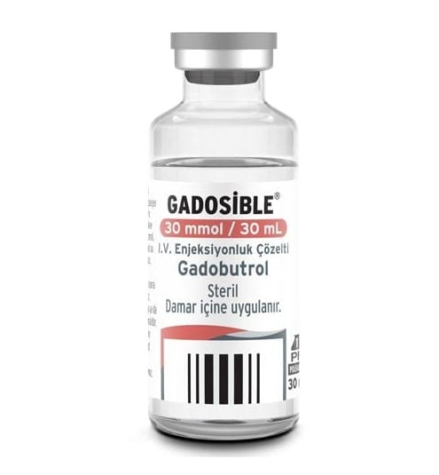

Gadosible 30 mmol/ 30 mL I.V. Enjeksiyonluk Çözelti (1 adet)

Ne için kullanılır
KT · Bölüm 1• GADOSİBLE, yalnızca tanı amaçlı olarak, manyetik rezonans görüntülemede toplardamar içine uygulanan bir kontrast maddedir. Manyetik rezonans görüntüleme, su moleküllerinin normal ve normal olmayan dokulardaki davranışının görüntülenmesi ile elde edilir. • 1 mL çözelti içerisinde 604,715 mg etkin madde (gadobutrol) içermektedir. • GADOSİBLE, 30 mL çözelti içeren renksiz cam flakonda kullanıma sunulmuştur. • GADOSİBLE, erişkinler ve zamanında doğan bebekler dâhil her yaştan çocuklarda; tüm vücutta manyetik rezonans görüntülenmesi (MRG) için kullanılır.